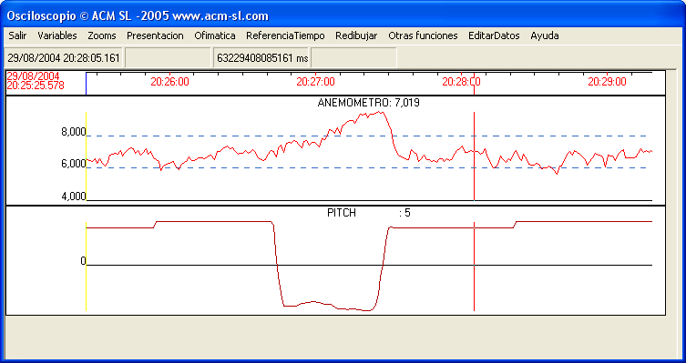

Each aerogenerator has its own instruments for measuring wind intensity, direction, room temperature, etc., so that they can function without receiving information from any external sensor to the aerogenerator.
However, the wind farm has similar sensors, located in a significant place within the Park, where these parameters are also measured, in aweather station.
 Fig 1
Fig 1
Wind measures are usually made at two heights, in order to be able to know the turbulence that exists at each moment. The sensors of the weather station are connected to the SCADA.
It is interesting to note that the wind speed measurements of the weather station may differ from those in each of the Park's wind turbines. This is because these are in different locations, which may be very separate from each other, and also because of the method of measurement used in wind turbines. In these, the anemometers are usually located at the back of the Gondola (seeWhat is an aerogenerator?). Because of this, the wind measure corresponds to the wind passing through the rotation plane of the shovels, and therefore corresponds to the incident wind less that used to move them. This can be seen in actual measures in an aerogenerator in production, as shown in the figure below.

Fig 2.It can be seen that significant changes in the angle of the shovels (Pitch), at moments 20: 26: 40 and 20: 27: 20, influence the'measured wind',que tiene una evolución que no se corresponde con la evolución real del viento (mucho más estable). Es decir, el viento medido unos segundos después de que el angulo pasa a -5º, y el aerogenerador no está conectado y no genera potencia, corresponde con el 'viento real' incidente en las palas; en el gráfico se aprecia que este valor es aproximadamente 2 m/s adicionales sobre el valor medido cuando está en producción.